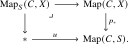
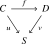
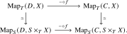
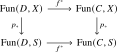
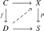
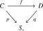
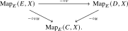
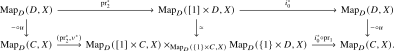
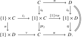
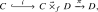

Let \(S\) be a category and consider two categories over \(S\) given by functors \(u\colon C \to S\) and \(p\colon X \to S\). Recall from Definition 1.9.2 the anima \(\Map_S(C,X)\) of functors \(C \to X\) over \(S\), defined via the pullback square

Definition 9.1.1. A covariant equivalence (resp. a contravariant equivalence) over \(S\) is a commutative triangle
 such that for any left (resp. right) fibration \(p\colon X \to S\) the induced functor
\[
- \circ f \colon \Map_S(D,X) \to \Map_S(C,X)
\]
is an equivalence.
such that for any left (resp. right) fibration \(p\colon X \to S\) the induced functor
\[
- \circ f \colon \Map_S(D,X) \to \Map_S(C,X)
\]
is an equivalence.
Definition 9.1.2 (Initial/terminal functors). A functor \(f\colon C \to D\) is called initial (or limit-cofinal) if for any category \(S\) and any functor \(v\colon D \to S\), \(f\) is a covariant equivalence over \(S\) (with respect to the composite \(C \xrightarrow{f} D \xrightarrow{v} S\)). Dually, \(f\) is called terminal (or colimit-cofinal) if for any \(v\colon D \to S\), \(f\) is a contravariant equivalence over \(S\).
Lemma 9.1.3. Consider a covariant (resp. contravariant) equivalence

Proof
Let \(X \to T\) be a left (resp. right) fibration. We obtain a commutative square as follows:

Proposition 9.1.4. Let \(f\colon C \to D\) be a functor. Then the following conditions are equivalent:
(1) The functor \(f\) is initial (resp. terminal).
(2) For every left (resp. right) fibration \(X \to D\) the induced map \[ - \circ f\colon \Map_D(D,X) \to \Map_D(C,X) \] is an equivalence.
(3) For every left (resp. right) fibration \(p\colon X \to S\) the commutative square

is a pullback square.
Proof
The equivalence between (1) and (2) is immediate from Lemma 9.1.3. For the equivalence between (1) and (3), note that the two vertical maps labeled \(p_*\) are still left (resp. right) fibrations by Lemma 4.2.18. Thus the square is a pullback square if and only if it induces equivalences on fibers, by Corollary 6.1.13. By Lemma 6.4.19, the map on fibers is precisely the map \[ - \circ f\colon \Map_S(D,X) \to \Map_S(C,X) \] appearing in the definition of initial (resp. terminal) functors.
Remark 9.1.5. We may understand part (3) as saying that for every solid commutative square

We first record the closure and recognition properties that will be used to construct the factorization.
Lemma 9.1.6. Consider a commutative triangle

(1) The functor \(f\) is an equivalence.
(2) The functor \(f\) is initial (resp. terminal).
(3) The functor \(f\) is a covariant (resp. contravariant) equivalence over \(S\).
Proof
The implications (1) \(\implies\) (2) and (2) \(\implies\) (3) are immediate. Suppose (3) holds. Under straightening, \(p\), \(q\), and \(f\) correspond to functors \(P,Q\colon S\to\An\) and a natural transformation \(P\to Q\). For every left fibration \(X\to S\) classified by \(H\colon S\to\An\), the defining equivalence for \(f\) identifies with \[ \Hom_{\Fun(S,\An)}(Q,H) \to \Hom_{\Fun(S,\An)}(P,H). \] This is an equivalence for every \(H\), so Exercise 2.6.2 shows that \(P\to Q\) is an isomorphism in \(\Fun(S,\An)\). Under straightening, it follows from Corollary 8.3.16 that \(f\) is an equivalence. The right-fibration case is dual.
Lemma 9.1.7. Let \(f\colon C \to D\) be a left (resp. right) fibration. Then \(f\) is initial (resp. terminal) if and only if it is an equivalence.
Proof
This follows from Lemma 9.1.6 by taking \(q = \id_D\) and \(p = f\).
(1) Let \(u\colon C \to D\) be an initial (resp. terminal) functor. Then for every category \(E\), also the functor \(u \times \id_E \colon C \times E \to D \times E\) is initial (resp. terminal).
(2) Consider two functors \(u\colon C \to D\) and \(v \colon D \to E\) and assume that \(u\) is initial (resp. terminal). Then \(v\) is initial (resp. terminal) if and only if \(vu\) is initial (resp. terminal).
Proof
For (1), consider a functor \(f\colon D \times E \to S\) and a left (resp. right) fibration \(X \to S\). We want to show that the induced functor \[ - \circ (u \times \id_E)\colon \Map_S(D \times E, X) \to \Map_S(C \times E, X) \] is an equivalence. By uncurrying, the functor \(f\) corresponds to a functor \(\tilde{f} \colon D \to \Fun(E,S)\), and the above functor is equivalent to the functor \[ \Map_{\Fun(E,S)}(D, \Fun(E,X)) \xrightarrow{- \circ u} \Map_{\Fun(E,S)}(C, \Fun(E,X)). \] Since the functor \(\Fun(E,X) \to \Fun(E,S)\) is still a left (resp. right) fibration by Lemma 4.2.18, it follows from the assumption on \(u\) that this functor is an equivalence.
For (2), let \(X \to E\) be a left (resp. right) fibration, and consider the following commutative diagram:

Proposition 9.1.9. Let \(f\colon C \to D\) be a localization, so it factors as \(C \to C[W^{-1}] \iso D\) for some collection of morphisms \(W \hookrightarrow \Map([1],C)\). Then \(f\) is both initial and terminal.
Proof
Recall that \(\Map^W(C,T)\) denotes the full subanima of \(\Map(C,T)\) on the functors that send all morphisms in \(W\) to isomorphisms in \(T\). Consider a left (resp. right) fibration \(p\colon X \to D\). By Lemma 6.4.18, \(p\) is conservative. Hence a functor \(F\colon C \to X\) sends the morphisms in \(W\) to isomorphisms in \(X\) if and only if \(pF\colon C \to D\) sends them to isomorphisms in \(D\). It follows that the right square in the following diagram is a pullback: The left square is also a pullback square since both horizontal functors are equivalences. By passing to fibers over the identity \(\id_D\colon D \to D\), this shows that the induced functor \[ \Map_D(D,X) \to \Map_D(C,X) \] is an equivalence, which is what we needed to show.
The endpoint inclusions provide the basic examples from which the adjoint examples will follow.
Example 9.1.10. The inclusion \(\{1\} \hookrightarrow [1]\) is terminal. The inclusion \(\{0\} \hookrightarrow [1]\) is initial.
Proof
Let us treat the case of \(\{0\}\hookrightarrow [1]\), the other case being dual. Consider a left fibration \(p\colon X \to S\). By Proposition 9.1.4, it will suffice to show that the commutative square is a pullback square. But since the bottom functor agrees with \(p\colon X \to S\), this holds true by Lemma 4.2.2.
We next show that right adjoints are terminal and left adjoints are initial. We begin with the fully faithful case.
Proposition 9.1.11. Let \(v\colon D \to C\) be a left Bousfield localization with right adjoint section \(u\colon C \hookrightarrow D\). Then \(u\) is a terminal functor. Dually, a left adjoint section of \(v\) is an initial functor.
Proof
We prove the first case, and leave the second dual case to the reader. Consider a right fibration \(p\colon X \to D\). The unit transformation \(\eta \colon \id \to uv\) corresponds to a functor \(\eta\colon [1] \times D \to D\), allowing us to regard \([1] \times D\) as a category over \(D\). Consider now the following square:
Since the inclusion \(\{1\} \hookrightarrow [1]\) is terminal by Example 9.1.10, so is \(\{1\} \times C \to [1] \times C\) by Proposition 9.1.8, and hence both vertical functors are equivalences. It follows that the square is a pullback square, i.e. we have an equivalence
\[
\Map_D([1] \times D, X) \iso \Map_D([1] \times C, X) \times_{\Map_D(\{1\} \times C, X)} \Map_D(\{1\} \times D, X).
\]
We will finish the proof by exhibiting the map \(- \circ u\colon \Map_D(D,X) \to \Map_D(C,X)\) as a retract of this equivalence, implying that it is itself an equivalence as desired. To this end, we consider the following diagram:
 
Proposition 9.1.12. Any right adjoint is terminal. Any left adjoint is initial.
Proof
By symmetry it suffices to do the right adjoint case, so let \(f\colon C \to D\) be a right adjoint. As in the proof of Theorem 6.2.1, we may factorize \(f\) as a composite

Proposition 9.1.13. Let \(x\) be an object of a category \(C\). Then \(x\) is an initial (resp. terminal) object of \(C\) if and only if the functor \(x\colon * \to C\) is initial (resp. terminal).
Proof
If \(x\) is initial, then \(x\colon * \to C\) is a left adjoint and is therefore initial by Proposition 9.1.12. Conversely, assume that \(x\colon * \to C\) is initial. The functor \((x,\id_x)\colon * \to C_{x/}\) is a left adjoint and hence initial. Since its composite with the projection \(C_{x/}\to C\) is \(x\), cancellation shows that \(C_{x/}\to C\) is initial. This projection is a functor between left fibrations over \(C\), so Lemma 9.1.6 implies that it is an equivalence. Thus \(x\) is an initial object. The terminal case is dual.
Corollary 9.1.14. Let \(x\) be an object of a category \(C\). For any left (resp. right) fibration \(p\colon A\to C\) with fiber \(A_x\) over \(x\), restriction along \((x,\id_x)\colon *\to C_{x/}\) (resp. \((x,\id_x)\colon *\to C_{/x}\)) induces a canonical isomorphism \[ \Map_C(C_{x/},A)\iso A_x \qquad \bigl(\text{resp.\ }\Map_C(C_{/x},A)\iso A_x\bigr). \]
Proof
The functor \((x,\id_x)\colon *\to C_{x/}\) is initial by Proposition 9.1.13. Since \(A\to C\) is a left fibration, precomposition therefore induces an equivalence \[ \Map_C(C_{x/},A)\iso\Map_C(*,A)=A_x. \] The right-fibration statement is dual.